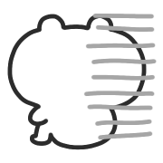

10/5/2026 - Version Three
Welcome to Version Three!... what do you mean there's hardly a difference? I spent 3 months keeping it a secret for noble reasons. Guh.

The site has been converted to 11ty to improve workflow and prepare for site growth. It's not perfect under the hood, but I enjoyed learning it. Some much-needed changes have been made to launch alongside this update.
New
- A new RSS feed, linked in the footer, that will push updates from this point on. They will be used for anything that involves a page update of some kind: blog, library, cd. That's the plan anyhow.
- Light and dark themes that match your device or app preferences. The dark theme is " midnight melon," for now. Thank you to Miko for the help.
- New index that merges the About page with it, with new art of Manila and Des (my Inkling, since I don't have a formal persona).
- Page name changes. "Works" is now "Garage," and "Changelog" is now "Updates."
- New page in the Garage: "My Computer." Originally a blog post about my PC building experience that I thought would fit there
- 3 new CDs in the Library CDs page
- Site credits have been moved to "Updates"
- Slight section size increase
- "Dream C Club" page moved from Garage to Library
- Temporary removal of "Fun Stuff" in Library, thinking of moving some of the links in there around
- Logged into my email on my phone so I actually see incoming mail; don't hesitate to mail me again if I missed you.
Upcoming:
- The gallery, the most ambitious addition to the site, is next. It will be generated by the state-of-the-art Canadian AI model, TipGPT. It will take a long time to get what I want archived, but it will be fun.
- The free coloring pages will be moved here.
- Pages for other fan characters like the Kirby gijinkas. This'll also be a long-term project, as I get lazy with writing. I would like a ghetto wiki here.
- "Fun Stuff" reorganization
- Writing on more niche subjects. "Behind the scenes" blogs are my favorite to write – they are educational and I like to think they could inspire a reader – so those will continue, alongside the occasional review.
- More site-unique art for headers and the Updates page, a second button design
I am open to feedback. Feel free to send mail, write on the Guestbook, or message me elsewhere.
Back...